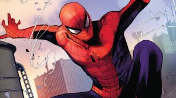
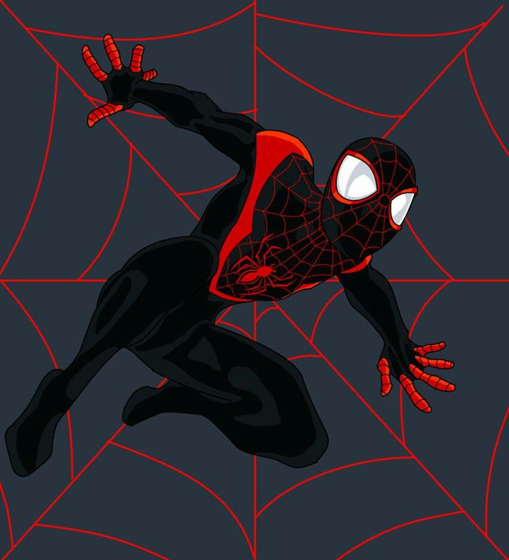
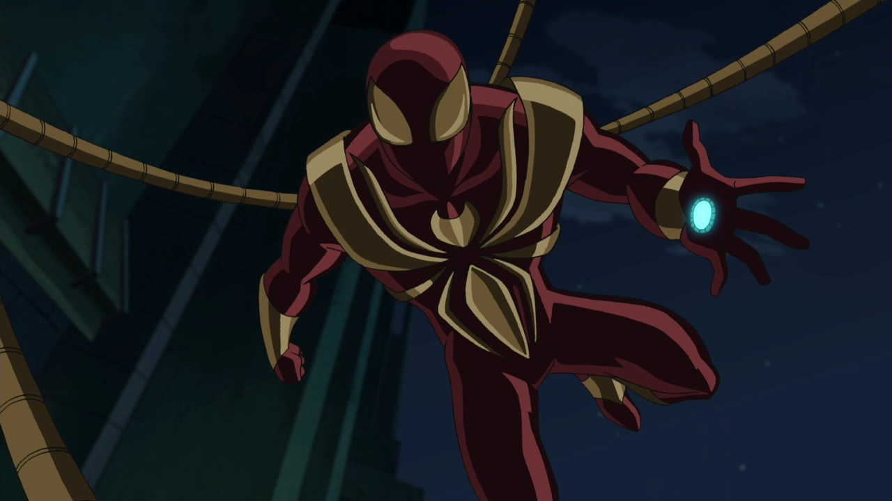
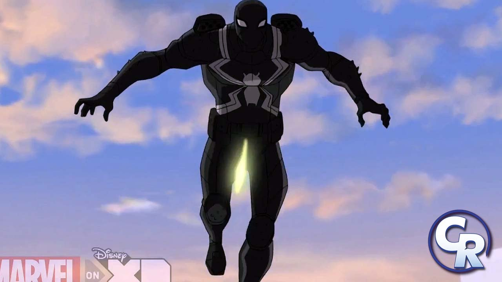
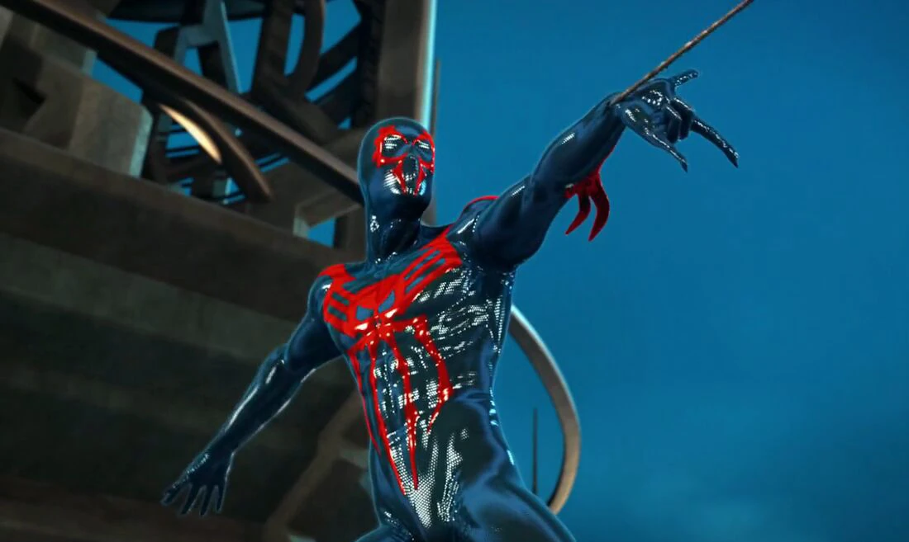

1.Spider-Man
Peter Parker is the original Spider-Man and the heart and soul of the Ultimate Spider-Man series. Created as a reimagining of the classic Marvel character, this version of Peter is a younger, more relatable teen facing the challenges of adolescence while bearing the responsibilities of being a superhero. The Ultimate Spider-Man comic series, launched in 2000 by Brian Michael Bendis and Mark Bagley, aimed to modernize Spider-Man for a new generation. It retained the essence of the character’s origin—bitten by a radioactive spider, Peter gains superhuman abilities and, after the tragic death of his Uncle Ben, learns the lesson that “with great power comes great responsibility.
2.Miles-Morales
Miles Morales made his debut in "Ultimate Fallout #4" following Peter Parker’s death. Created by Brian Michael Bendis and Sara Pichelli, Miles is a young Afro-Latino teenager who takes up the mantle of Spider-Man. His origin mirrors Peter’s in many ways—he is also bitten by a genetically-altered spider, granting him similar abilities. However, Miles brings a fresh perspective to the role, dealing with different cultural and societal issues as he navigates his new life as a superhero.
3.Iron-Spider
The Iron Spider is a technologically advanced suit designed by Tony Stark (Iron Man) for Peter Parker. It first appeared in the comics during the "Civil War" storyline but was adapted into the Ultimate Spider-Man animated series with some modifications. The suit’s sleek design and advanced capabilities, such as enhanced strength, agility, and the iconic mechanical spider legs (or "waldoes"), make it one of the most visually striking and powerful versions of Spider-Man.
4.Agent-Venom
Agent Venom is the superhero alias of Flash Thompson, a character who has evolved significantly from his early days as Peter Parker’s high school bully. In the Ultimate Spider-Man animated series, Flash bonds with the Venom symbiote, which grants him powers similar to Spider-Man’s, including enhanced strength and agility. However, unlike previous hosts of the symbiote, Flash uses these abilities for good, becoming a government operative and a hero in his own right.
5.Spider-Man-2099
Spider-Man 2099, also known as Miguel O’Hara, is a futuristic version of Spider-Man from the year 2099. He first appeared in the comics in 1992, created by Peter David and Rick Leonardi. In the Ultimate Spider-Man animated series, Miguel makes several appearances, often through time-travel or alternate universe storylines. His character is a geneticist who gains spider-like abilities after an experiment goes wrong.